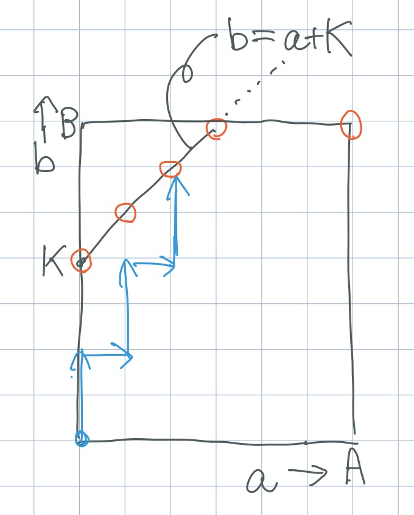
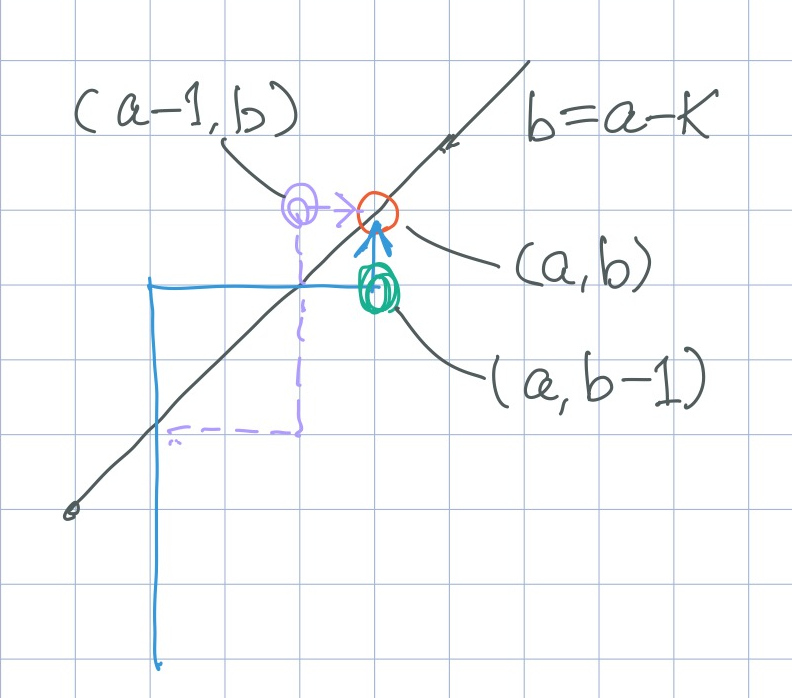

問題概要
種類AのカードがA枚，種類BのカードがB枚ある．一列にランダムに並べる． 正整数 $K$ が与えられる．
左から順にカードを見る．
- それまでに見た種類Aのカードの枚数を $a$，種類Bのカードの枚数を $b$ とする． $b = a + K$ であれば，スコア $b$ を得て終了する．そうでなければ次のカードに進む．
- 最後のカードまで見た場合には，スコア $B$ を得て終了する．
スコアの期待値を求めよ．
制約
- $A \geq 1, B \geq 1$
- $1 \leq K \leq A + B \leq 10^7$
解
次のように言い換えられる:
下図のグリッドで，左下隅から右上隅に (上か右に) 進むパスをランダムに選ぶ． 赤い丸のいずれか最初に到達した点の b 座標をスコアとする．

赤丸 $(a, b)$ に最初に到達するパスを数えられれば良い．$b = a + K$ に乗っている赤丸で考える．(右上隅の赤丸も同様．) $(0, 0)$ から $(a, b)$ へのパスの数から，これらのパスで $(a, b)$ より早く直線を触わるものの数を引けば良いが， これだと考えにくい．

$(0, 0)$ から $(a, b)$ へのパスでそれまでに直線を触らないものは，緑の二重丸 $(a, b - 1)$ を通る．したがって， $(0, 0)$ から $(a, b - 1)$ へのパスで，それまでに直線を触らないものを数えても同じ． パスは $\binom{a + b - 1}{a}$ だけあるので，これらのうち，それまでに直線を触ってしまうものを数えて引けば良い．
それまでに直線を触るものについて，触った後の部分を直線 $b = a - K$ で折り返す (図の紫色の点線)． これは，$(0, 0)$ から紫の二重丸 $(a - 1, b)$ へのパスになる．
逆に$(0, 0)$ から $(a - 1, b)$ へのパスは，必ず直線 $b = a - K$ に触る．初めて触った点以降を折り返すと， $(0, 0)$ から $(a, b - 1)$ へのパスで，直線に触るものになる．
したがって，求める数は，$\binom{a + b - 1}{a} - \binom{a + b - 1}{a - 1}$ で求められる．
補足
カタラン数の求め方と同様．
かんプリン氏のウェブサイトの記事 「グリッドの最短経路の数え上げまとめ 」に， いろいろな問題に対する数え上げが載っている．